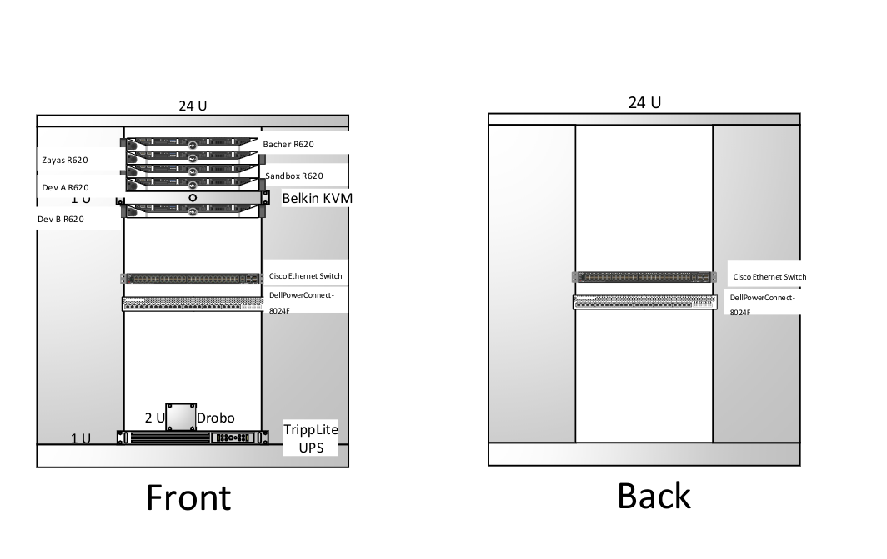

|
|
|
Graduate School and Linux System Administration
Email: wbollock at gmail dot com
Most recent update to this website:
I am currently a senior Information Technology student at FSU. I have developed a large
passion for Linux, at work and at home. I have strongly expanded my technical skills
while working at the FSU College of Communication and Information HelpDesk, while I have grown
my management skills while working at On the Rocks Bartending.
My current plans are to attend graduate school at FSU in Spring 2019. I am still open to job opportunities, specifically
dealing with Linux and system administration.
I attended Florida State University, and will graduate/graduated December 2019. I received a Bachelor's of Science in Information Technology. During my time at Florida State, I was active in the Community Outreach Group, a club which specialized in community service involving technology. I was the Webmaster during the Fall 2019 semester. Lastly, I was apart of the Honors College during my stay at Florida State, and recieved a scholarship to study abroad.
Note that this site has Google Analytics so I can track user traffic. Please keep uBlock Origin on if you don't wish to be tracked.
Running Arch Linux as my main OS has been a phenomenal learning experience. Having to manually install and configure every package on my machine has given me an incredible level of control. Everything from configuring a USB device to setting up a printer can turn into a learning experience, whether you like it or not.
SSSD, or System Security Services Daemon, is a way to incorporate Active Directory logons into Linux servers, also known as Single Sign-On. Setting up SSSD was my first major Linux related project for work. I quickly realized the importance of documentation in a large project, and attempted to keep the scope of the original project in mind. I wrote a Bash script (a language I often rely on...) to automate the installation process, the removal of LDAP, and a host of other verifications and checks. A link to the Bash script is here.
On the less technical side, I am the manager of 30+ bartenders at a local event bartending company, On the Rocks. While in this role, I managed expensive and large events for over two years. These required proper planning, communication, and execution. My technical roles transitioned towards G-Suite Administration, domain name upkeep, and adding features to an online ordering form.
During my time at the CCI IT HelpDesk, I took on the task of setting up a development server rack. I started from the basics, racking and unracking old components, swapping out RAM and NICs, and cable management. I learned an incredible amount about Windows Server, including Powershell administration, Active Directory, group policy, failover clustering, etc. This was my introduction to enterprise networking, creating VLANSs and setting up NIC teaming. Above and below are diagrams from this experience.
I run a personal Plex and FTP server at home. An old cryptocurrency miner, my server is currently running Ubuntu. I've also installed Pihole and Home Assistant (through Docker) on a spare Raspberry Pi.
I wrote a small Java program to test advanced Java techniques, like encapsulation, interface, abstract methods, and polymorphism, that also helps me pay 30+ employees every two weeks.